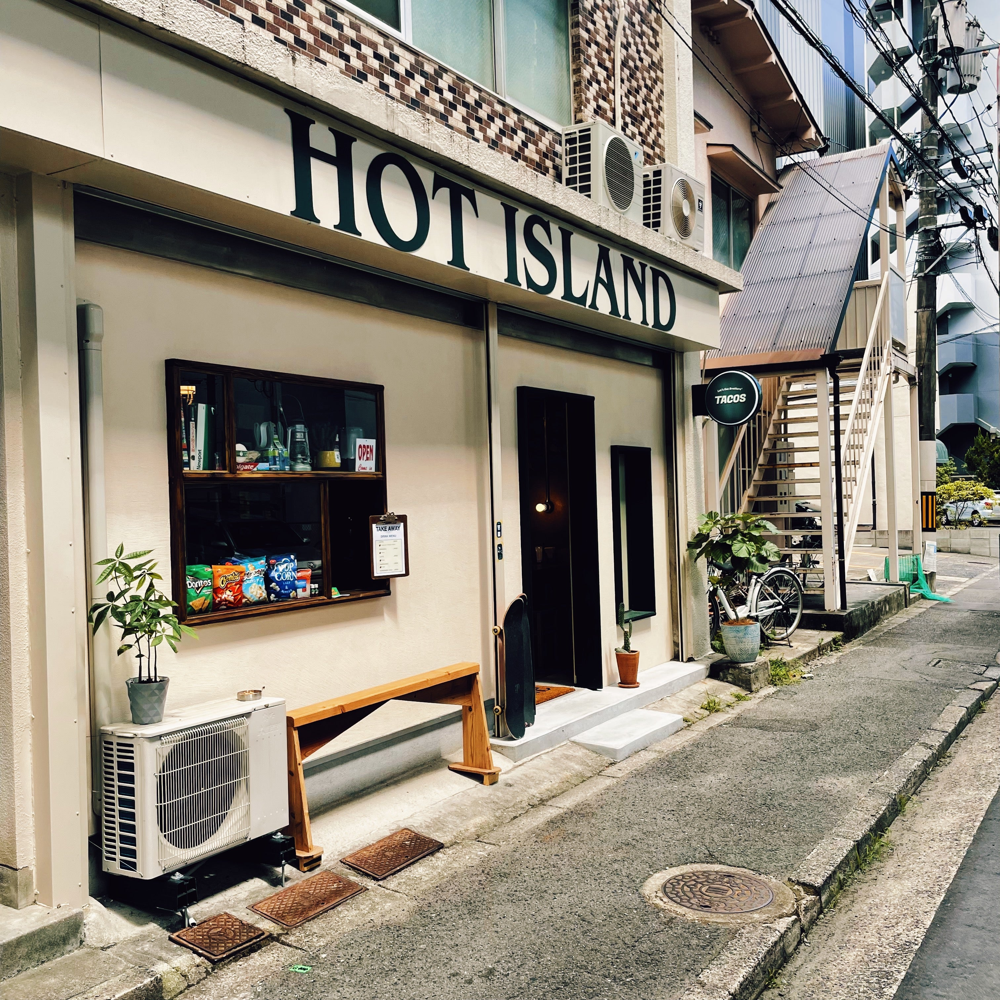

Hot Island
★★★★★
Very good tacos, with hand made on the moment corn tortillas. Authentic mexican food with japanese twist!

- Instalations: Confortable 10/10
- Location: 〒732-0057 Hiroshima, Higashi Ward, Futabanosato, 1 Chome−1−18 1f(Google Maps: https://maps.app.goo.gl/J6Lk1XDvzB6Kf7Wd9)
- ¥1000-¥3000
- Only cash.